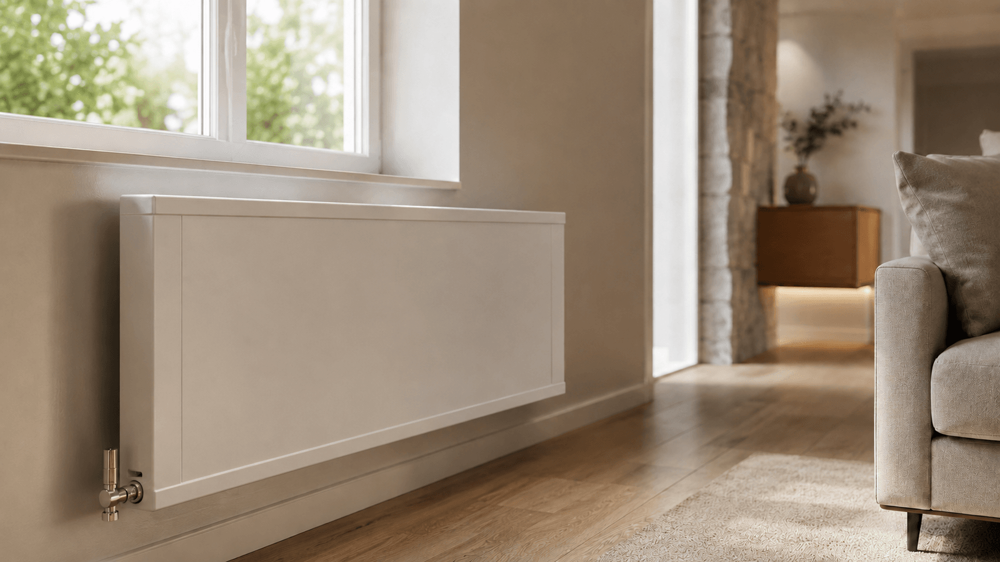
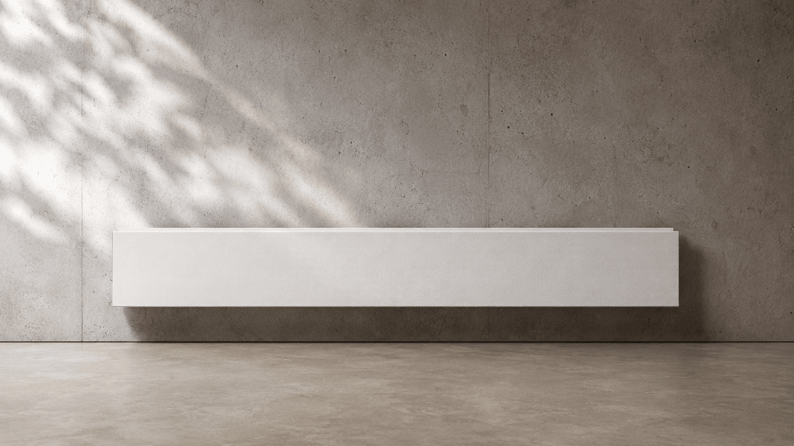
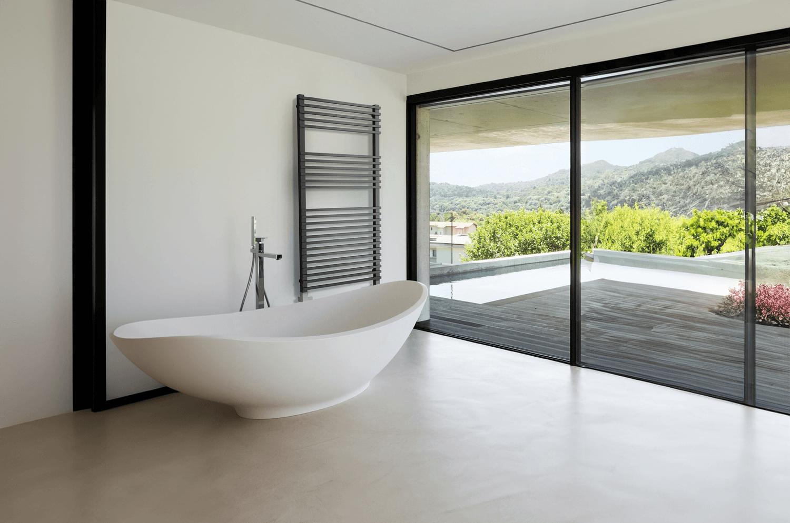
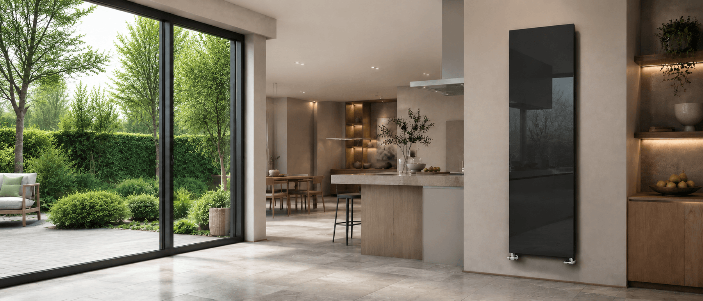

Línea 04 — Emisores
Climatización a baja temperatura.
Radiadores, toalleros y emisores para trabajar a 35–45 °C. Diseño limpio, alta eficiencia.

Descripción
Temperatura de trabajo: 35–45 °C.
Emisores diseñados para trabajar a baja temperatura, con mayor superficie de intercambio. Carcasa de aluminio e intercambiador de cobre.
Radiadores de pared, torre y decor, y toalleros, con acabados —vinilado, espejo y cristal— pensados para integrarse en interiores contemporáneos.
- 01 35–45 °CTemperatura de trabajo óptima en régimen de baja temperatura.
- 02 Mayor intercambioMás superficie de emisión para el mismo confort a menor temperatura.
- 03 CompatibilidadAerotermia, bomba de calor aire-agua y suelo radiante híbrido.
- 04 DiseñoRadiadores T30, Tower y Decor, y toalleros. Acabados vinilado, espejo y cristal.
Gama · selección



Medidas y acabados
- 01 T30Ancho 60–200 cm · Alto 39–57 cm (doble hasta 111 cm) · Fondo 9 cm.
- 02 TowerAncho 40–60 cm · Alto 140–200 cm · Fondo 9 cm.
- 03 DecorAncho 40–80 cm · Alto 140–200 cm · Fondo 9 cm · Acabados: vinilado, espejo y cristal.
Usa estas medidas como límites mínimos y máximos. Fuera de rango, consulta la alternativa de catálogo más cercana.